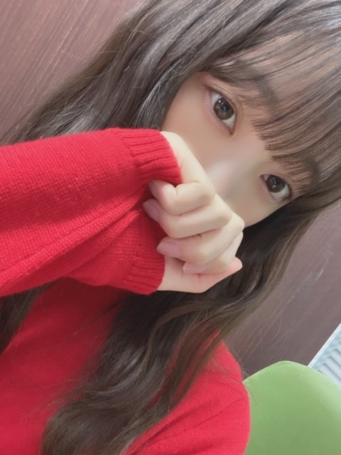
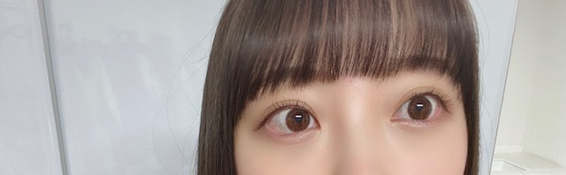

2020/0415Wed猿

dTVにて配信中です!
見てくださいましたか？？
かきちゃん、ゆな、れいちゃんと一緒に
撮影できて良かったです☺︎

感想お聞かせくださーい!
あと、薄めメイクがいいよと
コメントいただきますがたまに載せてる
強めメイクとかはリクエストいただいて
おうち時間を利用して
遊びとしてやっているものですので
それでこれから歌番組などに出るわけではありません
ファンの方との交流のひとつの
話題として家でいろんなメイクをして
写真撮ったりしてます
どんどん変わっていってる...って不安にならないでくださいね。笑
でも勘違いされるのもいやなので
しばらくやめます
ということで
みなさんのおすすめの曲、MV
を教えてください
いろんなアーティストさんのMVを観て
私なりの解釈や感想をあげていきたいとおもいます
勉強になりそうだ〜(｡･ω･｡)！
ではは
メンバーに会いたいよ( ; _ ; )
みなさんにも( ; _ ; )
泣

2020/04/15 21:12
コメント(728)
やっぱり未央奈たんの演技は素晴らしい
MVでなくて申し訳ないなと思うんですが
私の好きな曲を並べ立てるので暇なときにでも聴いてみてください
❬日食なつこ❭ 2099年 青いシネマ エピゴウネ Dig 廊下を走るな 大停電
❬湯木慧❭ 一匹狼
❬ハンバートハンバート❭ 虎 待ち合わせ 同じ話 生活の柄(カバー)
❬BEGIN❭ ボトル二本とチョコレート この街はなれて 防波堤で見た景色 海の唄
❬The BOOM❭ 星のラブレター 中央線 気球に乗って 幸せであるように
❬ヒグチアイ❭ まっすぐ 備忘録
多くてすみません
私の好きな曲を並べ立てるので暇なときにでも聴いてみてください
❬日食なつこ❭ 2099年 青いシネマ エピゴウネ Dig 廊下を走るな 大停電
❬湯木慧❭ 一匹狼
❬ハンバートハンバート❭ 虎 待ち合わせ 同じ話 生活の柄(カバー)
❬BEGIN❭ ボトル二本とチョコレート この街はなれて 防波堤で見た景色 海の唄
❬The BOOM❭ 星のラブレター 中央線 気球に乗って 幸せであるように
❬ヒグチアイ❭ まっすぐ 備忘録
多くてすみません
ブログ更新ありがとう！！
自分のオススメはシナリオアート、Miyuu、マナミさんです。
シナリオアートさんは男女のツインボーカルでハモってる歌声がとても素敵です。さらに、MVが独創的で是非観てもらいたいです。
Miyuuさんは歌声がYUIさんに似ててとても気持ちいいです。こちらはMVはあまりありませんがサブスクなどで曲は出ているので聞いてみてください
マナミさんは体は小さいけどパワフルな歌声と疾走感のあるギターの音が特徴的で聞き応えがすごくあると思います。あまり、音源が見つからないかも知れませんがオススメです。
長くなりましたが良かったら聞いてみてください！
自分のオススメはシナリオアート、Miyuu、マナミさんです。
シナリオアートさんは男女のツインボーカルでハモってる歌声がとても素敵です。さらに、MVが独創的で是非観てもらいたいです。
Miyuuさんは歌声がYUIさんに似ててとても気持ちいいです。こちらはMVはあまりありませんがサブスクなどで曲は出ているので聞いてみてください
マナミさんは体は小さいけどパワフルな歌声と疾走感のあるギターの音が特徴的で聞き応えがすごくあると思います。あまり、音源が見つからないかも知れませんがオススメです。
長くなりましたが良かったら聞いてみてください！
美波の「カワキヲアメク」と「ライラック」
saucy dogの「煙」、「マザーロード」、「ジオラマ」
Uruの「プロローグ」、「あなたがいることで」
Maica_nの「秘密」
saucy dogの「煙」、「マザーロード」、「ジオラマ」
Uruの「プロローグ」、「あなたがいることで」
Maica_nの「秘密」
初コメント失礼します☺︎︎︎︎猿に会うの未央奈ちゃんの不思議な雰囲気とお芝居見てて楽しかったです！あと個人的な意見として私は未央奈ちゃんの薄いメイクもインスタでしてくれてる色んなメイクどっちも好きです！♡参考になります(´･ ･`)！
おすすめMVはAimerさんのRefrainって曲とuruさんのプロローグです☺︎︎︎︎これからも頑張ってね！応援してます！
おすすめMVはAimerさんのRefrainって曲とuruさんのプロローグです☺︎︎︎︎これからも頑張ってね！応援してます！
JUJUさんの「奇跡を望むなら...」
聞いてみてください(^^)
聞いてみてください(^^)
猿に会う、２話見たよ～。
みおなちゃんの占い師、キャラ強烈だね。
それに、登場シーンが怖い。そもそも何
であんなところに、大きな荷物持って居
たのだろう。
ライス下さいもそうだけど、やっぱり
先輩の演技は、憑依の仕方が一味違いま
すよね。
僕らの時代は、ＭＶといってもせいぜい
バンドが演奏している場所が変わってる
ぐらいで、今みたいに映像作品のように
凝ったものはほとんどなかったからなぁ。
なので、お勧めは若い人にお任せ。
みおなちゃんの占い師、キャラ強烈だね。
それに、登場シーンが怖い。そもそも何
であんなところに、大きな荷物持って居
たのだろう。
ライス下さいもそうだけど、やっぱり
先輩の演技は、憑依の仕方が一味違いま
すよね。
僕らの時代は、ＭＶといってもせいぜい
バンドが演奏している場所が変わってる
ぐらいで、今みたいに映像作品のように
凝ったものはほとんどなかったからなぁ。
なので、お勧めは若い人にお任せ。
猿に会う見たよー！演技最高！MVは乃木坂以外だとWANIMAさんとかオススメです！
未央ちゃんブログ更新有り難うございます。おすすめの曲ですか…。ちょっと変わったものを。プロレスのグレートムタの入場曲、入場シーンにゾクッときます。いきなりババッと動いたりするところとか、色気を感じます。こんなんですいません。が、未央ちゃんを応援してます
猿に会う2話まで観ましたよー♪
謎の占い師ミステリアスです！！
置いてきぼり可哀想でしたが、
仕方ないですね？続き楽しみです☆
薄めメイクは安心感ありますし、
強いメイクも魅惑的で大好きです✨
色々なメイクが見られて楽しいし、
様々な表現が見られて嬉しいです♡
ラストアイドル新アルバムすきぴ！
乃木坂シングルも素晴らしいです✌
お家時間いっぱい楽しみましょう☺
謎の占い師ミステリアスです！！
置いてきぼり可哀想でしたが、
仕方ないですね？続き楽しみです☆
薄めメイクは安心感ありますし、
強いメイクも魅惑的で大好きです✨
色々なメイクが見られて楽しいし、
様々な表現が見られて嬉しいです♡
ラストアイドル新アルバムすきぴ！
乃木坂シングルも素晴らしいです✌
お家時間いっぱい楽しみましょう☺
更新ありがとうございます！！猿に会う見ました！ビックリしました笑演技上手すぎー！
私は、TWICEの「Be as One 」の歌詞が心にささります。
挫けたりする時よく聞きます。1回聞いてほしいです。
私は、TWICEの「Be as One 」の歌詞が心にささります。
挫けたりする時よく聞きます。1回聞いてほしいです。
問題です。
MONDO GROSSO/惑星 Vocal〇〇〇〇（乃木坂46）
果たして誰が歌っているでしょうか？
ヒント：すぐ側にいる人です。
堀ちゃんと2人で歌っています。
答えはYouTubeで確認を！
とても良い曲です。
MONDO GROSSO/惑星 Vocal〇〇〇〇（乃木坂46）
果たして誰が歌っているでしょうか？
ヒント：すぐ側にいる人です。
堀ちゃんと2人で歌っています。
答えはYouTubeで確認を！
とても良い曲です。
３つ！！
ごちそうさまです。
カンちゃんの木凄くない？
もはや農家じゃん！
ハチは出てくるのかな～（笑）
手が忙しいヤ～ツ
更に見栄え･･･映え！ですね！！
オトナも大変ですね（笑）
ごちそうさまです。
カンちゃんの木凄くない？
もはや農家じゃん！
ハチは出てくるのかな～（笑）
手が忙しいヤ～ツ
更に見栄え･･･映え！ですね！！
オトナも大変ですね（笑）
初めてコメントします！
最近になって堀ちゃんのブログを読み始めました！
どんどん可愛くなっていくし、美意識も高くてほんとに尊敬してます✨
メイクとかも参考にさせてもらってます！
これからも頑張ってください！！
私のオススメの曲はKARAの｢CUPID｣です！
MVが全体的に美しくて、メンバーも凄く綺麗なので堀ちゃんに是非見て欲しいです！
最近になって堀ちゃんのブログを読み始めました！
どんどん可愛くなっていくし、美意識も高くてほんとに尊敬してます✨
メイクとかも参考にさせてもらってます！
これからも頑張ってください！！
私のオススメの曲はKARAの｢CUPID｣です！
MVが全体的に美しくて、メンバーも凄く綺麗なので堀ちゃんに是非見て欲しいです！
えー！いろんなメイク凄く楽しみなのに。
いろんな堀ちゃん見れて楽しいのになぁ。
って初コメントでした。笑
いろんな堀ちゃん見れて楽しいのになぁ。
って初コメントでした。笑
[猿]ありがとー❗️
最近の楽しみはレアな未央奈が見られることです❗️
僕のオススメの曲は、
GLIM SPANKYさんの「怒りをくれよ」
Avril Lavigneさんの「BadReputation」テンション上がります。
「ONEPIECE」の曲は良曲多いです。
次のブログと写真集楽しみです❗️
最近の楽しみはレアな未央奈が見られることです❗️
僕のオススメの曲は、
GLIM SPANKYさんの「怒りをくれよ」
Avril Lavigneさんの「BadReputation」テンション上がります。
「ONEPIECE」の曲は良曲多いです。
次のブログと写真集楽しみです❗️
1日3回もありがとうございます。早く会いたいなぁ〜。
めんどくさいおたくもいるね
気にしないで！どんな堀ちゃんもだいすきだよ！！
インスタたくさん更新してくれてありがとう！
気にしないで！どんな堀ちゃんもだいすきだよ！！
インスタたくさん更新してくれてありがとう！
本日3回目のブログ更新ありがとうございます
猿に会うの未央奈ちゃんとっても素敵でしたよ❕
もっと未央奈ちゃんの演技してるとことか見れたらいいなぁと思ってます❗
連ドラ主演して欲しいです
では、体調に気を付けて頑張ってくださいね
猿に会うの未央奈ちゃんとっても素敵でしたよ❕
もっと未央奈ちゃんの演技してるとことか見れたらいいなぁと思ってます❗
連ドラ主演して欲しいです
では、体調に気を付けて頑張ってくださいね
更新ありがとうございます。古いMVになりますが、アメリカテキサス州出身のスリーピースバンド ZZTopのTV Dinners と言う曲のMVは未央奈さん好みだと思います。
未央奈ちゃんブログ更新ありがとう！
UVERworldの｢一滴の影響｣｢7日目の決意vol.1｣｢THE OVER｣のMV見て欲しい！ もちろん曲も最高なんだけど、とても感動するMVだから見てほしいです！
UVERworldの｢一滴の影響｣｢7日目の決意vol.1｣｢THE OVER｣のMV見て欲しい！ もちろん曲も最高なんだけど、とても感動するMVだから見てほしいです！
堀ちゃん3回目のブログ更新ありがとう！
あつ森してて猿に会うまだ見てない！これから見るよ！
fripSideさんの曲は良く聴くよ！MVにはいろんな芸人さんが出ているので楽しいですよ！
あつ森してて猿に会うまだ見てない！これから見るよ！
fripSideさんの曲は良く聴くよ！MVにはいろんな芸人さんが出ているので楽しいですよ！
強めメイクの未央奈ちゃん大好きだよ！！
様々な意見があってアイドルは大変だと思うけど、バチバチな未央奈ちゃんもたまには見せてください！お洒落すぎるインスタも楽しんでます！
色々な方法でファンのことを楽しませてくれてありがとう！♡
様々な意見があってアイドルは大変だと思うけど、バチバチな未央奈ちゃんもたまには見せてください！お洒落すぎるインスタも楽しんでます！
色々な方法でファンのことを楽しませてくれてありがとう！♡
たくさんブログ更新ありがとう！
ポルノグラフィティの楽曲大好きなので是非聞いてみてください！
ポルノグラフィティの楽曲大好きなので是非聞いてみてください！
RADWIMPSのいいんですか？とトレモロ、何十年後かに「君」と出会っていなかったアナタに向けた歌とてもしみるんでオススメです！
メイク動画とかいろんな未央奈ちゃんがみれて好き！
いっぱい更新してくれるのも未央奈ちゃんが
身近に感じて嬉しい！ありがとう〜！❤︎
いつも楽しみに待ってる〜☺︎☺︎☺︎☺︎
いっぱい更新してくれるのも未央奈ちゃんが
身近に感じて嬉しい！ありがとう〜！❤︎
いつも楽しみに待ってる〜☺︎☺︎☺︎☺︎
こんばんは！
堀ちゃんのメイク薄いのも強いのも好きなので
また気が向いたら見せてください！
おすすめMV
THEYELLOWMONKEYの聖なる海とサンシャイン
歌詞と曲の世界観にピッタリです！
監督が高橋栄樹さんで、おいでシャンプーとか乃木坂の曲とか個人PVも撮ってる方です！
ザキラーズのMr.brightside
中世ヨーロッパって感じの世界観です！
気が向いたら是非！
いつか会えると信じて今は我慢し続けます！
それでは
堀ちゃんのメイク薄いのも強いのも好きなので
また気が向いたら見せてください！
おすすめMV
THEYELLOWMONKEYの聖なる海とサンシャイン
歌詞と曲の世界観にピッタリです！
監督が高橋栄樹さんで、おいでシャンプーとか乃木坂の曲とか個人PVも撮ってる方です！
ザキラーズのMr.brightside
中世ヨーロッパって感じの世界観です！
気が向いたら是非！
いつか会えると信じて今は我慢し続けます！
それでは
大好き！健康に気をつけてねー！
オススメのMV :
Maroon 5 - Maps, Payphone, Sugar(←どれのMVストーリー性があって、見応えがある！)
Avicii - The Nights(←男性青年と父親の関係を描いたMVになってるんだけど、女の子とお母さんの関係性に置き換えて見てもいいと思う！)
One Direction - Story of My Life(←これは知ってると思うけど！笑)
あと、乃木坂46のアナスターシャと逃げ水もオススメです！
Maroon 5 - Maps, Payphone, Sugar(←どれのMVストーリー性があって、見応えがある！)
Avicii - The Nights(←男性青年と父親の関係を描いたMVになってるんだけど、女の子とお母さんの関係性に置き換えて見てもいいと思う！)
One Direction - Story of My Life(←これは知ってると思うけど！笑)
あと、乃木坂46のアナスターシャと逃げ水もオススメです！
ブログ更新ありがとう！ わーい！
うれしいーー♡
みおなーー
うれしいーー♡
みおなーー
お邪魔します
えと、おススメのMVは男性だと生田絵梨花さんの歌ってらっしゃったGLAYさんの
『グロリアス』いいですよ、今見ると少しレトロな感じもして気分転換にいいかもです。
女性だと以前乃木坂にもいらっしゃった松井玲奈さんセンターのSKEさんで『片思いfinally』
勢いのあるMVなのでたまに見たくなっちゃいます。
気のめいる時期がしばらく続きますがお体に気を付けて頑張って下さい。
それではまた〜
えと、おススメのMVは男性だと生田絵梨花さんの歌ってらっしゃったGLAYさんの
『グロリアス』いいですよ、今見ると少しレトロな感じもして気分転換にいいかもです。
女性だと以前乃木坂にもいらっしゃった松井玲奈さんセンターのSKEさんで『片思いfinally』
勢いのあるMVなのでたまに見たくなっちゃいます。
気のめいる時期がしばらく続きますがお体に気を付けて頑張って下さい。
それではまた〜
ブログ更新ありがと！
1日に何回も更新してくれてまじで嬉しいです！
個人的に好きなのは、古いかもやけどavicii 、SEKAI NO OWARI
とか好きです！
僕も会いたいです！
1日に何回も更新してくれてまじで嬉しいです！
個人的に好きなのは、古いかもやけどavicii 、SEKAI NO OWARI
とか好きです！
僕も会いたいです！
ブログありがとう
みおなブログありがとう！
すちやよ♥️♥️
みおなちゃんブログ更新ありがとうございます！！
私はインスタでみおなちゃんのメイク参考にしてもらっています！メイクはまだまだ初心者なのでメイクは薄くても濃くてもアイドルの方のメイク見れるなんてとても嬉しいのでこれからも楽しみに待っています☺︎
これからも応援しています^_^
私はインスタでみおなちゃんのメイク参考にしてもらっています！メイクはまだまだ初心者なのでメイクは薄くても濃くてもアイドルの方のメイク見れるなんてとても嬉しいのでこれからも楽しみに待っています☺︎
これからも応援しています^_^
ブログ更新ありがとう！いっぱい更新してくれて嬉しいです！！オトナミオナのメイクめっちゃ可愛いよ！きっとみんないつもTVで見れないメイクだからびっくりしてるだけだよ！！
HKTの新曲の3-2(さんひくに)って曲いいですよ！
このグループに今までなかったようなMVなんです！画質とか撮影場所とか、ダンスも曲調もとっても良いです！歌詞は曲聴きながら見ると何とも言えない気持ちになるのです。。
是非、聴いてみてください！！
HKTの新曲の3-2(さんひくに)って曲いいですよ！
このグループに今までなかったようなMVなんです！画質とか撮影場所とか、ダンスも曲調もとっても良いです！歌詞は曲聴きながら見ると何とも言えない気持ちになるのです。。
是非、聴いてみてください！！
ブログ更新ありがとう！
メイクは深みがあって面白いと思います。
EXILEの「道」のMVオススメです！
ブログをいっぱい更新してくれる未央奈ちゃんに感謝です！
メイクは深みがあって面白いと思います。
EXILEの「道」のMVオススメです！
ブログをいっぱい更新してくれる未央奈ちゃんに感謝です！
こんばんは！
おすすめラルクのMVすべてです。
深いのもあれば笑えるものもあって飽きないと思います！
ぜひ！
おすすめラルクのMVすべてです。
深いのもあれば笑えるものもあって飽きないと思います！
ぜひ！
未央奈！！
うちも会いたい
うちも会いたい
嵐の未完のMVはカッコイイですし歌もリズムがすごく良くて自分は好きです
あとは
MVとは異なるんですがうぃんぐさんがカバーしてる天ノ弱という曲が凄くて歌声に透明感があって好きです
あとは、RADIOFISHのパーフェクトヒューマンとかカッコイイとおもいます
参考にしてみてください
未央奈さん
これからも頑張ってください
あとは
MVとは異なるんですがうぃんぐさんがカバーしてる天ノ弱という曲が凄くて歌声に透明感があって好きです
あとは、RADIOFISHのパーフェクトヒューマンとかカッコイイとおもいます
参考にしてみてください
未央奈さん
これからも頑張ってください
きゃわたん♡
星野源さんの[くだらないの中に]をお勧めします。この曲は愛してるなどを使わないで出来たラブソングなので是非聴いてみてください。
猿に会う 見たよ！！！！
未央奈の秘密が気になる、！！どきどき！！
はやく会いたいなあーー、、、❤︎
ますます未央奈のことが好きになる！！
たくさんSNS更新してくれてありがとう！！！
未央奈の秘密が気になる、！！どきどき！！
はやく会いたいなあーー、、、❤︎
ますます未央奈のことが好きになる！！
たくさんSNS更新してくれてありがとう！！！
堀ちゃん！更新ありがとう！！
1日に3回も！！！
めちゃめちゃ嬉しいです！
ドラマの堀ちゃんはすっごい
ミステリアスでびっくりすること
多々あったけど、
ますます演技が上手になってきて
表現力豊かになったよね！
これからも演技の
お仕事増えて行ったらいいね！
堀ちゃんはナチュラルメイクが
1番です！
おすすめの曲は
Official髭男dismの
「ゼロのままでいられたら」です！
メロディーとか曲調は
堀ちゃんが好きかなぁ〜って
思うな〜！ぜひ聞いてみて！！
おすすめMVというか
全部のMVなんですけど
BiSHの曲は全部おすすめです！
ぜひ！
次回の更新も待ってるよ！！
では！
体調1番で！
おやすみおな〜
1日に3回も！！！
めちゃめちゃ嬉しいです！
ドラマの堀ちゃんはすっごい
ミステリアスでびっくりすること
多々あったけど、
ますます演技が上手になってきて
表現力豊かになったよね！
これからも演技の
お仕事増えて行ったらいいね！
堀ちゃんはナチュラルメイクが
1番です！
おすすめの曲は
Official髭男dismの
「ゼロのままでいられたら」です！
メロディーとか曲調は
堀ちゃんが好きかなぁ〜って
思うな〜！ぜひ聞いてみて！！
おすすめMVというか
全部のMVなんですけど
BiSHの曲は全部おすすめです！
ぜひ！
次回の更新も待ってるよ！！
では！
体調1番で！
おやすみおな〜
みおなちゃん、初めまして！
普段は読んでるだけなんですけどコメントしたくなったので
今回はコメントしてみます！
お洒落でメイク上手なみおなちゃん、これからもそのままで
いてほしいです。女の子が可愛くなろうとしたり、色んなメイクして
楽しんでいるのを否定するなんて！と思ってしまいまして。
薄いメイク、濃いメイク、色んな表情を作れるみおなちゃんは
凄いと思います！
だから、これからも色んなメイクを見たいです♡
普段は読んでるだけなんですけどコメントしたくなったので
今回はコメントしてみます！
お洒落でメイク上手なみおなちゃん、これからもそのままで
いてほしいです。女の子が可愛くなろうとしたり、色んなメイクして
楽しんでいるのを否定するなんて！と思ってしまいまして。
薄いメイク、濃いメイク、色んな表情を作れるみおなちゃんは
凄いと思います！
だから、これからも色んなメイクを見たいです♡
未央奈さん、こんばんは
え～っ！
コメントが追いつかん！！笑
でも連投は
とてもありがたいです＼(^_^)／
いろんなメイクの写真
楽しんで見てましたよ～
気にすることないのだよ(^_^)
早くメンバーさんに会いたいね
寂しいけど
頑張って乗り越えましょうね
え～っ！
コメントが追いつかん！！笑
でも連投は
とてもありがたいです＼(^_^)／
いろんなメイクの写真
楽しんで見てましたよ～
気にすることないのだよ(^_^)
早くメンバーさんに会いたいね
寂しいけど
頑張って乗り越えましょうね
ブログ更新ありがとう
僕が聞いているのは菅田将暉さんの見たこともない景色です
おすすめなので聞いてみてください
僕が聞いているのは菅田将暉さんの見たこともない景色です
おすすめなので聞いてみてください
ブログ更新ありがとうございます！
どんなメイクの未央奈さんも素敵ですし、女の子として
参考にしたいなと思っています。いつもありがとうございます
私の癒しです、大好きー
どんなメイクの未央奈さんも素敵ですし、女の子として
参考にしたいなと思っています。いつもありがとうございます
私の癒しです、大好きー


high hope HERE with meです！
聞いてみてください！